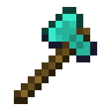

La mesa de crafteo es una de las mesas de trabajo existentes en minecraft
Esta sirve para fabricar los diferentes objetos del juego
Se consigue poniendo cuatro tablones de madera en el apartado de crafteo en el inventario del jugador, tambien se puede conseguir en diversas estructuras del juego

Hacha de cualquier material